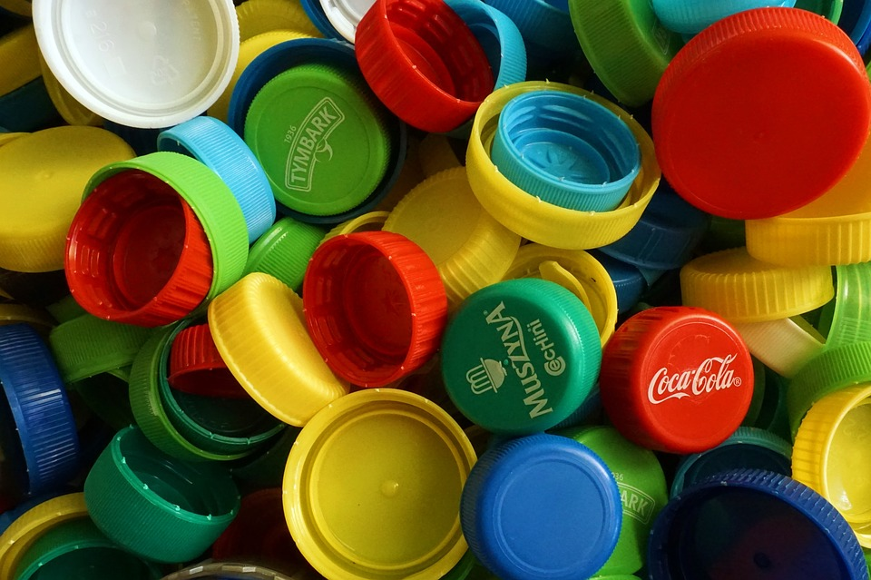

1. Тверской завод вторичных полимеров пл. Гагарина, д. 1/5 (фактическое местоположение не соответствует, смотрите в группе Вк) круглосуточно
2. Колледж им. Кайкова ул. 2-я Грибоедова, д. 20/1 пн - пт 8.30 - 16 При входе скажите вахтеру, что Вы хотите сдать Добрые крышечки!
3. Клуб по месту жительства "Богатырь" Сахаровское ш., д. 12 вт - сб, 10.00 - 12.00 и 14.00 - 19.00
4. Клуб по месту жительства "Матрица" наб. А. Никитина, д. 24а с 1 октября по 31 мая: вт - пт с 10.00 до 19.00, сб с 10.00 до 17.45 с 1 июня по 30 сентября: пн - чт с 10.00 до 19.00, пт с 10.00 до 17.45
5. Магазин натуральной косметики "My ecolife" ТЦ "Кредо", ул. Кольцевая, д. 66; 3 этаж (рядом с лифтом и лестницей) ежедневно, с 10 до 20
6. Центр помощи для людей, находящихся в трудной жизненной ситуации ул. Луначарского, д. 32, вход под вывеской "Конфетный рай" Предварительно согласуйте, пожалуйста, время визита в обсуждении: https://vk.cc/8zXvTI
7.Коворкинг для детей и родителей "Дом радуги" ул. Скворцова-Степанова, д. 38 пн - пт с 9 до 20
8. Детский клуб "Мальвина" ул. Мусоргского, д. 12, оф. 303 (3 этаж) пн - пт с 16 до 20, сб с 9 до 15
9. Аптека Фарминторг № 11 ул. Горького, д. 184 ежедневно, с 7.30 до 22.00
10. ДК «Сахарово» ул. Маршала Василевского, д. 13 пн - пт с 9.00 до 13.00 и с 13.45 до 21.00 , сб - вс с 11.00 до 18.00
11. ДЦ «Истоки» Петербургское ш., д. 95 стр. 1 ежедневно, с 9.00 до 21.00
12. Аптека АЛОЭ № 172 Петербургское ш., д. 36 ежедневно с 9.00 до 21.00
13. Аптека АЛОЭ № 184 Петербургское ш., д. 51 пн - пт с 8.00 до 20.00, сб - вс с 9.00 до 20.00
14. Аптека АЛОЭ № 259 ул. Хромова, д. 31 ежедневно с 8.00 до 20.00
15. Аптека АЛОЭ № 228 ул. Фрунзе, д. 18 пн - пт с 8.00 до 20.00, сб - вс с 9.00 до 20.00
16. Аптека АЛОЭ № 352 ТЦ «Кредо», ул. Кольцевая, д. 66 ежедневно с 10.00 до 20.00
17. Аптека АЛОЭ № 185 ул. Скворцова-Степанова, д. 7 Круглосуточно
18. Аптека АЛОЭ № 205 б-р Шмидта, д. 47 ежедневно с 10.00 до 21.00
19. Аптека АЛОЭ № 178 ул. Горького, д. 58 пн - пт с 8.00 до 20.00, сб - вс с 9.00 до 20.00
20. МБУ "Подростково-молодежный центр" ул. Склзикова, д. 52а, каб. 11 ежедневно 9.00 - 21.00
21. Аптека Фарминторг № 193 Зеленый пр., д. 43 к. 1 ежедневно, с 7.30 до 22.00
22. Спорткомплекс "Радуга" пр-т Победы, д. 39а ежедневно, с 7.00 до 22.00
И множество других